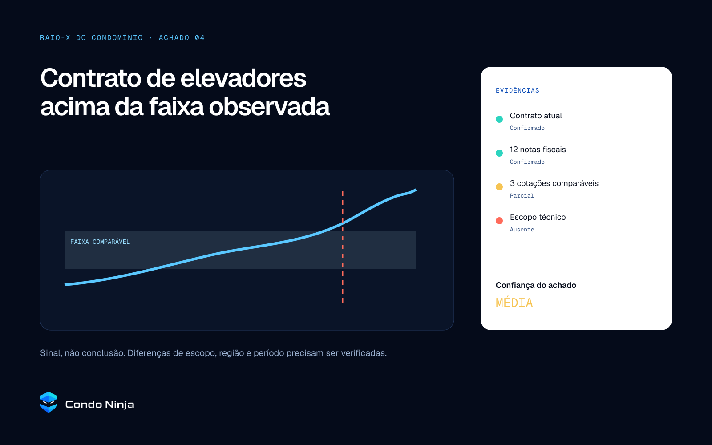
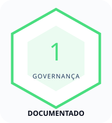
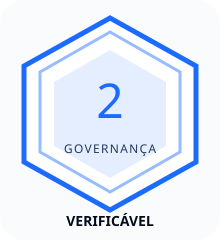

Proprietários
Querem entender despesas, contratos e decisões que afetam o imóvel.
SISTEMA DE MARCA · 2026

Identidade, voz, produto, dados e aplicações.
A Condo Ninja transforma documentos fragmentados em clareza acionável para proprietários e moradores.
Ela atua como segunda opinião independente, sem representar síndicos ou administradoras e sem converter sinais em acusações.
A marca deve ser entendida antes que o usuário conheça auditoria, contabilidade ou inteligência artificial.
A Condo Ninja entra do lado do proprietário, com independência estrutural.
O problema não termina no acesso. Ele está na interpretação, no contexto e na capacidade de agir.
Querem entender despesas, contratos e decisões que afetam o imóvel.
Percebem problemas no cotidiano, mas nem sempre dominam a linguagem técnica.
Precisam organizar evidências e coordenar perguntas sem escalar conflitos cedo demais.
Podem usar a plataforma em diligência pré-compra e avaliação de risco.
O morador precisa entender o que existe, perceber o que falta, comparar o que é comparável e saber quais perguntas fazer.
Reequilibrar o poder de informação nos condomínios.
Dar a proprietários ferramentas, contexto e evidências para entender despesas, avaliar governança e coordenar decisões.
Tornar a transparência verificável uma prática normal em condomínios brasileiros.
Não defender contratos administrativos nem interesses de gestão.
Explicitar o que sabemos, o que falta e o grau de confiança.
Traduzir sem apagar nuance ou criar certeza artificial.
Período, escopo, fonte e base comparável acompanham o achado.
Automação apoia o julgamento; não funciona como juiz.
Coordenação e participação aumentam a qualidade da decisão.
Sem pular da suspeita para a acusação.
Para proprietários e moradores que querem entender como o condomínio usa seus recursos, a Condo Ninja organiza documentos, compara números e constrói evidências rastreáveis. Diferente de administradoras e ferramentas genéricas de leitura de PDF, combina independência, benchmark, investigação, histórico, governança e mobilização.
Busca padrões, contextualiza números e explica o que a evidência permite afirmar.
Protege o patrimônio e reduz assimetria sem recorrer ao medo ou à hostilidade.
Ninja é comportamento: observação, preparo, discrição e precisão. Nunca combate, fantasia ou caricatura.
Dado, sinal, hipótese, evidência e conclusão não são sinônimos.
Benchmark sempre inclui amostra, período, local e escopo.
Todo achado importante deve ser rastreável.
Cada análise termina em pergunta ou próximo passo proporcional.
Automação é ferramenta de apoio, não veredito.
Entenda para onde o dinheiro vai.
Saiba o que já é possível afirmar.
Compare o que realmente é comparável.
Uma análise do lado de quem paga.
Mais documentos e proprietários, melhor base.
Todo mês, milhões de pessoas pagam para manter um patrimônio que é delas.
Recebem balancetes, atas, contratos e números. Informação existe. O que falta, muitas vezes, é clareza.
A Condo Ninja organiza o que está disperso, compara o que pode ser comparado e mostra onde vale olhar de novo.
Não transforma sinal em culpa. Não vende certeza artificial. Trabalha com fonte, contexto e evidência.
Porque transparência só ganha valor quando devolve capacidade de decisão.
Nomeia benefício, público e categoria em uma única frase.
A segunda opinião independente do seu condomínio.
Seu dinheiro merece um ninja.
Clareza independente para proprietários entenderem e decidirem melhor.
A Condo Ninja organiza documentos, compara despesas e investiga sinais para que proprietários entendam o condomínio, façam perguntas melhores e tomem decisões com evidências.
A Condo Ninja é uma plataforma independente de auditoria, inteligência e governança condominial. Reúne documentos, dados públicos, benchmarks e revisão humana para transformar informação dispersa em uma análise rastreável. O Raio-X do Condomínio mostra indicadores, achados, fontes, documentos faltantes, níveis de confiança e próximos passos em um relatório HTML interativo. A plataforma trabalha do lado de proprietários e moradores, sem representar síndicos ou administradoras. Ela não acusa automaticamente nem promete economia garantida: diferencia dado, sinal, hipótese, evidência e conclusão para devolver clareza e poder de decisão a quem efetivamente paga e é dono.
A Condo Ninja é uma plataforma independente de auditoria, inteligência, transparência e governança condominial. Combinando organização documental, análise financeira, benchmark, dados públicos, tecnologia e revisão humana, transforma informações fragmentadas em evidências rastreáveis para proprietários e moradores. Seu principal produto de entrada, o Raio-X do Condomínio, apresenta indicadores, achados, fontes, documentos faltantes, níveis de confiança e próximos passos em uma experiência digital interativa.
Condo Ninja is an independent condominium intelligence platform that turns fragmented records into traceable evidence and clearer decisions for property owners.
Evitar verbos de confronto: desmascarar, pegar, denunciar ou provar culpa.
Domínio: condo.ninja. Em texto corrido, preservar C e N maiúsculos.

Proteção do patrimônio sem estética de segurança privada.
Dados estruturados, camadas e visão sistêmica.
Discrição, observação e precisão.
Atenção ao detalhe e capacidade de perceber sinais.
Goldman atua como assinatura distintiva. Interface, dados e conteúdo usam Geist e Geist Mono.

O lockup horizontal é padrão. O vertical funciona em espaços quase quadrados.
x = 1/4 da largura do símbolo.
Aplicar x em todos os lados do lockup. Em composições muito densas, aumentar para 1/3.
Não alinhar texto ou bordas ao interior da máscara.
32 px+Full colorFull color + branco em fundo escuro Monocromático branco em Signal 700
Monocromático branco em Signal 700#050B1A#0A1428#5AC8FF#1B6BFF#FAFBFD#FFFFFFAssinatura principal: Signal 500 + Ink 950. Azul não significa automaticamente positivo.
#050B1A#0A1428#101E3A#172A4D#23385F#34507F#6B85AD#9AB0D0#C9D6EA#E6ECF6#C7ECFF#9ADFFF#74D1FF#5AC8FF#2F9BFF#1B6BFF#0B4BB5#4ADE80#F6C453#FF6B5B#2DD4BF#A78BFA#D9B85F| Texto | Fundo | Contraste | Uso |
|---|---|---|---|
| Paper 50 | Ink 950 | 18,97:1 | AA/AAA |
| Ink 950 | Signal 500 | 10,42:1 | AA/AAA |
| White | Signal 700 | 4,57:1 | AA normal |
| Ink 500 | Paper 50 | 7,80:1 | AA/AAA |
| Ink 200 | Ink 950 | 13,36:1 | AA/AAA |
Não usar branco sobre Signal 500 para texto pequeno. Use Ink 950.
#9ADFFF → #5AC8FF → #1B6BFF#19E0EA → #2F9BFF → #0B4BB5#050B1A → #0A1428 → #101E3Atransparente → Signal 500 22% → transparenteGoldman Regular 400Geist 400 / 500 / 600Geist Mono 400 / 500Grid 24 px · stroke 1,8 px · terminais retos · cantos angulares · sem shuriken ou caricatura.
Use áreas amplas, alinhamentos fortes e um único gesto facetado por composição.
Tratar dados pessoais e documentos com anonimização. Nunca usar uma foto para insinuar culpa.
Olhar, camadas, sombra, movimento silencioso, grids e revelação.
Adulto, preciso e cinematográfico. Sem infância, arma, sangue, hacker de capuz ou exotização japonesa.

Exemplo ilustrativo. O marcador coral pede revisão; não afirma irregularidade.
Evidência e origem não ficam escondidas em rodapé remoto.
O usuário entende por que a análise é baixa, média ou alta.
O sistema pede o documento ou confirmação que mais aumenta a clareza.
Módulos bloqueados mostram valor e escopo, sem simular resultado.

Hierarquia: contexto do condomínio, estado da análise, indicadores, benchmark e próximos passos.

A tela nomeia o sinal, mostra o comparável e expõe as lacunas que limitam a conclusão.
Entenda o que a análise inclui, quais documentos exige e que perguntas ela ajuda a responder.
Nível de governança e pacote comprado permanecem sistemas separados.
Uma linha percorre a evidência e termina em foco.
Camadas surgem conforme a informação ganha contexto.
Nós se conectam em ritmo calmo, sem aceleração gamer.
Planos se alinham e formam o símbolo.
standard cubic-bezier(.2,.8,.2,1)enter cubic-bezier(.16,1,.3,1)prefers-reduced-motion: obrigatório
Dashboard interativo para explorar achados, fontes e confiança.
Exportação estável, datada e adequada a reunião, arquivo ou impressão.
Campos amplos, tipografia contida e rastreabilidade.


Regra principal: o parceiro pode fornecer dado, laudo ou serviço. A identidade nunca deve sugerir que síndico, administradora ou fornecedor controla a análise Condo Ninja.
Organize documentos. Compare despesas. Veja o que merece atenção.

O convite explica o benefício coletivo: mais documentos aumentam a base de evidências.
Nunca expor dados sensíveis no Open Graph ou no WhatsApp.
RAIO-X DO CONDOMÍNIOTemplate 16:9 entregue em PPTX editável com layouts de capa, seção, conteúdo, dado e encerramento.
:root {
--cn-ink-950: #050B1A;
--cn-signal-500: #5AC8FF;
--cn-font-brand: "Condo Goldman";
--cn-font-sans: Geist;
--cn-duration-standard: 280ms;
--cn-ease-standard: cubic-bezier(.2,.8,.2,1);
}Critérios, limiares, validade, auditor e processo de contestação.
Base em formação, Documentado, Verificável e Referência são provisórios.
Amostras, recortes geográficos, inflação, qualidade e escopo.
Quem aprova conclusões, corrige achados e documenta mudanças.
Uso restrito após validação do significado e dos critérios.
Due diligence de imóveis sem diluir o foco nos proprietários atuais.
condo.ninja